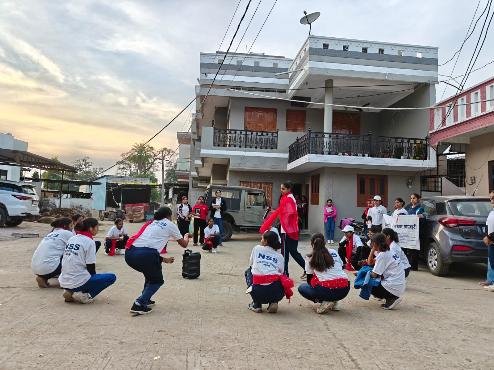

Awareness
Street plays and door-to-door drives on child marriage, addiction, HIV/AIDS and health.
Why we exist and how we work.

To bring care, awareness and opportunity to the people who need them most: children and adolescents in slums and villages, elderly people, children with special needs, and families affected by addiction and poverty. We do this through education, health and nutrition programmes, and community awareness in Indore and the villages around it.
Street plays and door-to-door drives on child marriage, addiction, HIV/AIDS and health.
Learning programmes for children in Indore's slums and nearby villages.
Adolescent health sessions, nutrition awareness, health camps and blood donation.
Time and support for elderly people, widows and children with special needs.
These are the objectives set out in the society's registered memorandum.
Call, WhatsApp or write to us. We would be glad to hear from you.